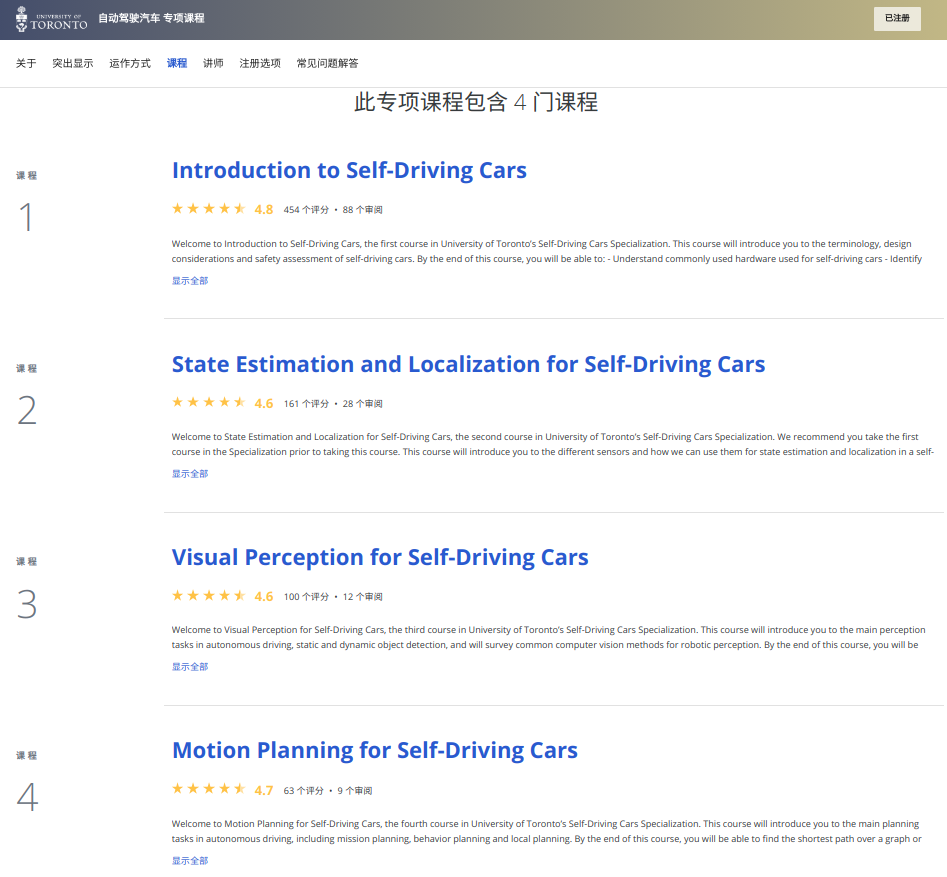
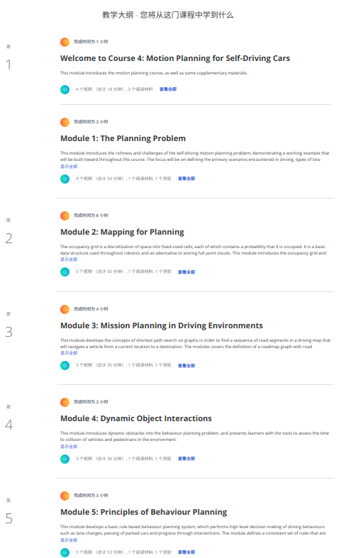
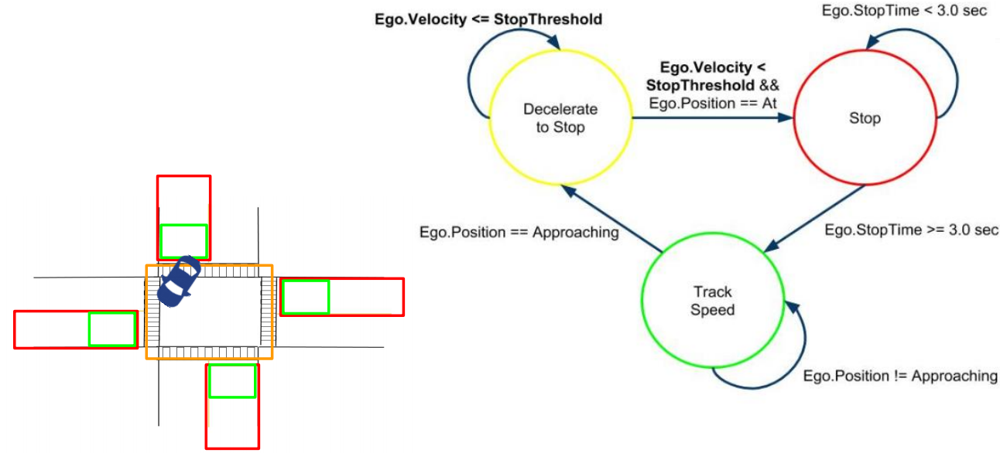
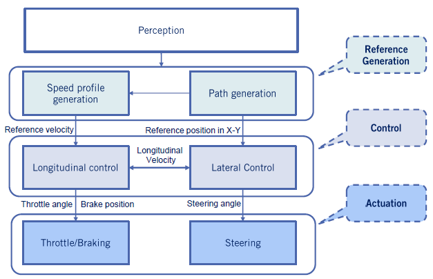
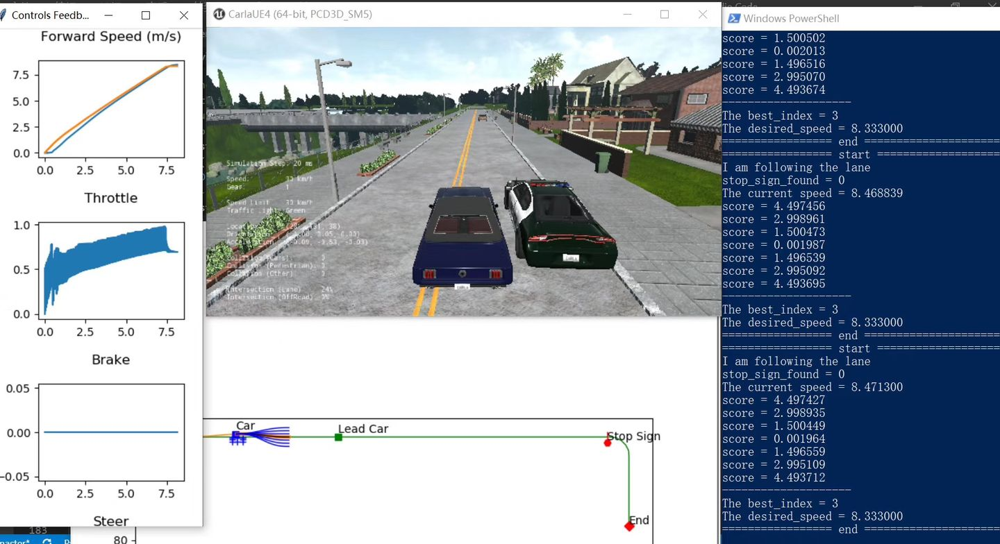

推荐：可能是目前最好的自动驾驶教程
从年初到现在，终于搞定了这个专项。Coursera平台推出的自动驾驶教程：Self-Driving Cars。在这对四期课程做个比较全面的总结，同时向大家推荐下，希望帮大家在自动驾驶学习路上添砖加瓦。
课程github整理：链接
1. 前言
Coursera是国际上很著名的付费学习平台，其中耳熟能详的课程包括吴恩达的《机器学习教程》，《算法》等，该平台由国外内知名大学在线推出课程供大家学习。在2018年中由多伦多大学推出了一套自动驾驶专项，链接。其中包括了四期课程，如图所示：

关于这套课程的具体信息和推荐，网上有很多，大家可以查阅下链接。而在这我想以一个学习者的身份向大家重新介绍一下这个课程，以及从中收货的一些心得体会。
2. 课程内容介绍
课程总共分为四部分，因为个人方向关系，刚开始我把兴趣点放在了Part4:Motion Planning部分，考虑到尽可能体系化学习，同时仿真器环境直接上手可能不习惯，因此决定从Part1部分慢慢学起，从此一发不可收拾。
目前网上能找到的资料，最多的是优达学城的自动驾驶教程，或者是麻省理工学院的强化学习自动驾驶教程。与上面提到的两个课程类似，多伦多大学这套课程很注重体系化的教学，从一开始的车辆控制部分课程入手，到最后的运动规划，循序过渡。进入课程中具体来看，每门课的理论知识点都有的放矢，不放过简单的知识点，让新手能成功上手，又在重点难点的部分多多着墨，让行业工作者也能耳目一新。放下Part4课程对比下（因为图片尺寸关系，只有部分，一共7课）

对于课程的内容，从制作的PPT中可以看出，主办方真的很用心去做，使用各种插图还有车辆仿真行驶的动态图来充分说明知识点，给出的公式一般也会一一说明，同时关键算法部分也会使用配图进行解释。对于新手而言真的很友好。


在这就不一一列举了，大家具体可以去我整理的Github仓库看一下。
想重点说明一下的是，课程中的实践部分对整个课程的理解帮助很大，在课程中间会不定地穿插使用jupyter notebook写好的练习题目，让大家在理解课程的基础上进行补充。课程全部使用python语言，要求对python的基本语法熟练掌握，同时了解并可以使用各种算法库。另外，在课程的最后，除了Part3外，都使用Carla仿真器作为作业平台。Carla是由Intel开源的自动驾驶仿真平台，其使用的广泛程度也不亚于优达学城的仿真器。想重点说明下，如果按照网上的安装方法，在电脑上进行完整安装，性能差的笔记本是很难搞定的，特别是显卡差的情况。在这出品方多伦多大学给出一个简易版安装方法，由其使用python进行适配，普通电脑也可以使用。
在这放下我的Part4期末作业的效果图：

3. 个人学习体会
整个专项课程分为四部分，从官方的介绍中大家可以了解的更深入，在这不再赘述。根据个人学习过程的体会和感受，对于该课程，每个人需要根据个人情况合理划分下学习重心和分配精力，不应该简单地一概而论。既可以进行框架型的理解，也可以就某个部分进行深度研究学习（通过参考文献）。
课程总体是偏难的，面向的对象应该对自动驾驶的整体框架有一定认识，同时具备一定的代码功底和数学功底。我强烈推荐大家根合理对这门课进行重心分配，如果有条件，根据个人专业方向进行二刷可以吸收的更多。
课程中一开始会对行业中各种基本概念进行介绍，包括算法的来源，在自动驾驶中的应用场景以及基本原理等。这一部分建议大家花费较多时间去理解和吸收，毕竟这是行业的根基。当能够熟练复述相关的知识点后，最好是把给出的参考论文对应进行阅读，如果不能理解可以放在课程结束后再重新阅读，作为个人视野的扩展和丰富。除此之外，课程中的知识点很多，最好根据官方给出的框架进行定位和联系。在复习的过程中，可以重新提炼和思考。通过仿真平台，大家可以亲自上手多次重复进行练习，如果时间允许可以根据个人需要添加自己的实现代码进行测试。
目前所有课程官方均已更新完毕，强烈建议大家注册课程学习（可以申请奖学金），这样可以通过作业对学到的知识点进行强化，同时收货证书嘻嘻。
4. 资料整理
所有课程资源，视频，PPT以及字幕等均已更新到个人github。